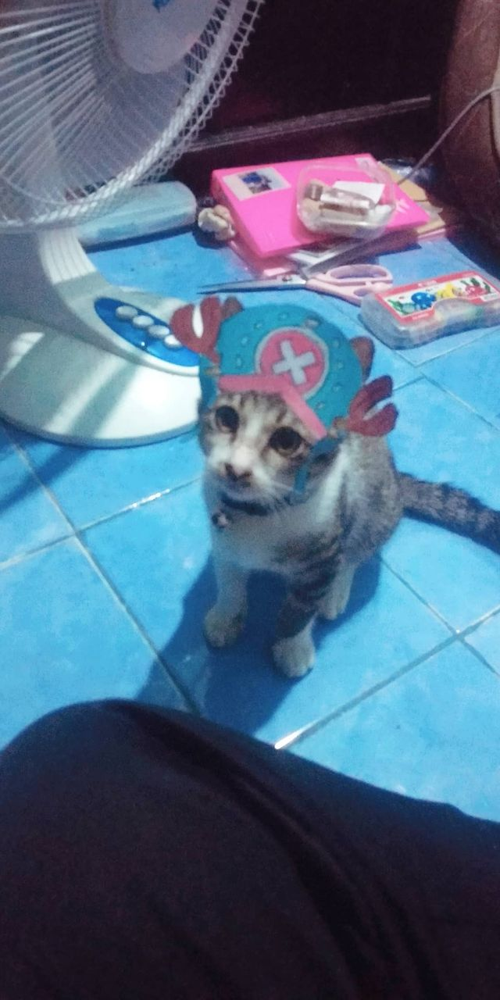

Cuming Cupiping Pedles Sikopedlus
Terdengar suara teriakan anak kucing samar - samar pada malam hari, saat itu aku langsung bergegas mencari sumber suara teriakan tersebut, disudut kebun sebelah rumah di dalam semak - semak, duduk seekor anak kucing berwarna hitam putih berteriak ketakutan. Aku langsung berinisiatif untuk menangkapnya untuk menyelamatkannya, namun agak sulit karena anak kucing ini ketakutan pada akhirnya aku berhasil menangkapnya. Aku memberi nama kucing ini adalah cuming cupiping pedlus sikopedlus panggilannya cuming atau piping atau ucik karena dia yang paling kecil, kucingnya periang manja suka bermain kejar - kejaran. Namun, sudah 2 bulan dia menghilang, aku dan adikku sudah mencarinya di sekitar Rt, Rw bahkan kelurahan namun ga ditemukan juga.